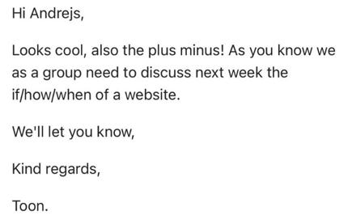

Professional Standard
You apply professional practice, both individually and in teams, in the areas of project organisation, communication with stakeholders, exploratory research, and reporting.
Inhoudsopgave
Design challenge
Team charter
Toen we met het project begonnen hebben we samen met de groep een team charter gemaakt met daarin de afspraken die we met elkaar hebben gemaakt. Deze gaan vooral over aanwezigheid en communicatie, maar ook over kritisch zijn tegen elkaar.
Communicatie ging vooral via whatsapp, aangezien het traject tussen Oss en Eindhoven vaak problemen heeft zoals vertragingen, storingen en soms aanrijdingen, liet ik daar weten wanneer ik later op school zou arriveren.
Trello
We hadden via Trello een taakverdeling gemaakt waarbij we een “To do” “Doing “Review” en “Done” sectie hebben. Zodra je klaar bent met je taak doe je hem in de review sectie waar die door teamgenoten wordt nagekeken zodat hun feedback kunnen geven.
ik had de content strategy en iedereen deed surveys^
Media Campaign
Media Campaign planning

In dit project hadden we hetzelfde idee om via Trello de planning bij te houden, maar dan ook een tijd er aan vast te binden. Zo heb je een overzichtelijke planning waarbij je per week ook kunt kijken wie wat doet of heeft gedaan.
Development Project
communication dev project
Communicatie was vanaf het begin van het project goed tussen beide de groep en nasmak. We hadden een datum afgesproken waar we designs voor de pagina af zouden hebben en iedereen heeft zich netjes daarhaan gehouden, en zodra deze klaar waren hebben we ze opgestuurd naar nasmak voor feedback.
Andrejs stuurde berichten namens de groep naar Nasmak
planning development project
In het projectteam hebben we goed samengewerkt, taken verdeeld en gezorgd dat iedereen zijn/haar rol kon vervullen. Via whatsapp hielden we weer goed contact met elkaar voor als iemand ooit later of niet aanwezig kon zijn.
Ook als iemand problemen had met code hielpen we elkaar, bijvoorbeeld met de achtergrond die ik wilde gebruiken voor mijn ticket pagina. Hierbij had ik hulp gekregen van Andrejs die het wel voor elkaar kreeg en het me duidelijk uitlegde.
We hadden via teams een planning gemaakt waarin we makkelijk konden zien waar iederen mee bezig was, maar onze communicatie op school en via whatsapp was zo goed dat we eigenlijk zijn vergeten om deze up te daten.
Communicatie met stakeholders
hier zie je een screenshot van communicatie tussen mij en de stakeholder. 4/6 mensen uit mijn projectgroep spreken geen nederlands dus nam ik het op me om contact op te nemen met de stakeholder die Nederlands is.
Voor de communicatie met de stakeholder van project X ging dit altijd via een persoonlijk gesprek. De stakeholder was namelijk de vader van mijn vriendin dus als ik werk af had waar ik feedback op wilde nam ik mijn laptop mee. Omdat hij 3 ploegen en gemiddeld bijna 60 uur werkt was dit soms nog lastig, maar in de kerstvakantie was dit wel makkelijk.